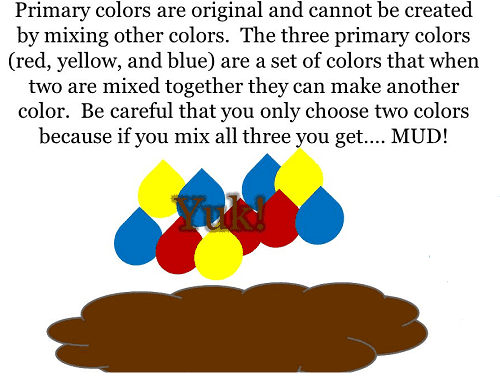

is an aspiring philosopher king, living the dream, travelling the world, hoarding FRNs and ignoring Americunts. He is a European at heart, lover of Latinas, and currently residing in the USA.


Feminists are among the biggest proponents of diversity, eager to criticize any group which dares to gather without a male-to-female transexual autistic differently-abled person of color. But the truth is they undermine diversity. Whether consciously or not, the end result of feminism is a boring, homogeneous bland society of light brown indistinct people, with the same opinions, preferences, and beliefs. God is dead. Trannies are cool. Aggressive female behavior is sexy and empowering. Wrong, wrong, wrong.
Are you concerned about your fellow human? Well then, you’re a social justice warrior! Had a bad experience with your last boyfriend? You’re lesbian or bi, or at the very least Genderqueer®. Think statues honoring brave leaders from our past are important historical reminders? You’re a racist, misogynistic piece of shit! Don’t believe in no fault divorce? You’re a patriarchal asshole keeping women down. You don’t get affirmative verbal consent from women before sex? You’re a rapist!
Believe women and men would both be happier with less promiscuity? You’re a small dicked hairy fatass living in your parents basement. Didn’t think Hillary Clinton would make a good president? You’re a sexist Donald Trump loving right winger. Don’t want to import refugees from the government-fomented Syrian War? You hate foreigners! Want to get together with other men in a space safe from aggressive female intrusion and discuss ideas with like-minded thinkers? You’re literally Hitler!
The faux diversity offered by feminists
Feminists have zero tolerance for any diversity of opinion. They don’t accept nuance or common ground with their opinions–if you don’t believe every extreme insane idea they have, they hate you just as much as their purported enemy, if not more. I’ve heard vegans say they hate vegetarians more than meat eaters, and they hold die-ins at restaurants offering vegan friendly options, just because they still serve meat to the 99% of other customers who are omnivores.
The end result of their segregation and labeling is a very non-diverse group that remains once everyone else has been excluded. Despite their rhetoric, feminists and modern leftists are intolerant and extreme.
New York City is the world’s greatest example of diversity. New York offers dozens of cultural experiences within a few blocks, with authentic, local communities where one can see different ethnicities, sample diverse foods, and hear foreign languages. This diversity exists precisely because there are certain segregated areas like Chinatown, Little Italy, Wall Street, and Harlem, where one can find different cultures. The key to this is the cultures have NOT integrated, socially, sexually, or physically.
True diversity
What feminists desire is a bland homogenous culture, much akin to the mythological “fascism” they rant and rave about, where every street is desegregated, every home occupied by a mixed race couple, and every employee hired by a roll of the racial dice.
The purported future American: Feminists Vision of Diversity
What they neglect to see, of course, is that all of the segregated diversity in NYC came about naturally. There is nothing stopping a straight white male from moving into the Castro district of San Francisco, or a Japanese man from moving to Little Italy, or a black man to move to Chinatown. But when given the choice, we choose to surround ourselves with people who are similar. And more importantly, if we did not, then these neighborhoods would slowly die and merge, becoming a less vibrant clone of the next neighborhood, occupied by a mass of anonymous light brown English speakers–the antithesis of diversity.

What makes Latina women great? Their curvy bodies, fiery passionate personalities, and sexual energy. What makes Asian women great? Their adherence to tradition, petite size, good hygiene, and femininity. By mixing we slowly destroy the highs and lows of all groups and end up with a middle of the road “average” person. What’s interesting to me about my closest friends and lovers, were their differences–their unique appearance, attitudes, or hobbies. Feminists want to end diversity by mixing all groups together and destroying their individuality.
The feminist’s quixotic quest for equality is a constant complaint, where feminists warp any observable difference into a positive or negative trait. There’s nothing “better” or “worse” about being able to conceive children. But the fact is, as a male, I will never be able to bear children.
A recent published study complained that bidders on eBay pay more for items sold by men than by women. Now, a rational person would conclude that since sellers on eBay are anonymous, this must be some inherent trait of men versus women, perhaps that men had better developed bartering skills, while women have better breastfeeding or knitting skills. But no, the authors stretched to find a reason that buyers were figuring out the sex of the seller and making harsh judgments against female sellers.
East Africans are very fast long distance runners, Swedes are tall and blonde, Japanese are thin and very traditional. There is no criticism involved in describing factual differences. A black man who can run faster than me is no better than me. He is merely different. But feminists take any difference or perceived difference as a horrible prejudicial hateful thought.
And so we end up with sociology textbooks like Occupational Ghettos: The Worldwide Segregation of Women and Men which laments the fact that women, much like the oppressed poor living in slums, work in “occupational ghettos” alongside fellow women. The authors point out that this trend is actually strongest in progressive wealthy nations! Could it be that women perhaps PREFER a job like schoolteacher over engineer?
Oppressive segregation is occurring when women choose feminine jobs
This is the perfect example of feminist hypocrisy: making value judgments about the actions of others. Who is to say the job of schoolteacher is inferior to that of a lawyer? If anything, I would argue the opposite. If it wasn’t for the need to acquire excess wealth to attract females, the rewards of teaching school, and the low stress environment (not to mention the summers off for vacation), make that job a far more attractive one than suiting up and sitting in a law office staring at a computer screen all day. But to a feminist, if women are still found to teach school in numbers greater than their proportion of the population, that is a clear sign of segregation and discrimination against them to not have “better” jobs.
Instead of actual diversity, coming from a broad array of backgrounds, usually what a feminist means when she is talking about more diversity is merely less men, particularly less straight white men. There was a brief controversy last year when the executive editor of Huffington Post tweeted a picture of their all-twentysomething white female editorial board bragging about how “diverse” they were.
HuffPo Editorial Desk: Literally what feminists consider “diverse”
True diversity is much more akin to the ROK writers–while we are all men (obviously, considering this is a site about masculinity and men’s issues), there are black, white, young, old, bodybuilders, daygamers, introverts, philosophers, religious scholars, historians, teetotalers and kratom enthusiasts living all over the world, submitting our ideas.
When a feminist demands more diversity, typically she is pushing for male exclusion, and often LESS diversity.
Nine times out of ten, when a feminist mentions diversity, she means less white males. The tenth time she is referring to social engineering to replace those most qualified in a position with an unqualified minority group, simply for the sake of social disruption.
Why are more than 50% of our military troops men, when men are only half the population? Feminists want to fix this by lowering standards so that women can now work as soldiers, despite the fact that they are less effective fighters and are far more likely to end up pregnant with a bastard than doing anything related to fighting wars.
CEO of Equifax, who oversaw hack of 143m Americans. Diversity Hire?
One of Orwell’s features of Newspeak was that it redefined a word to mean its exact opposite. We can see this today with feminists fighting for diversity by destroying it forever. As lovers of diverse ideas, women, places, foods, and experiences, we must oppose them.
Read Next: Why Feminists Hate Male Sexuality